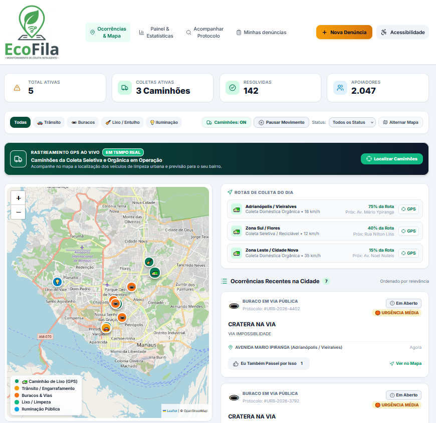
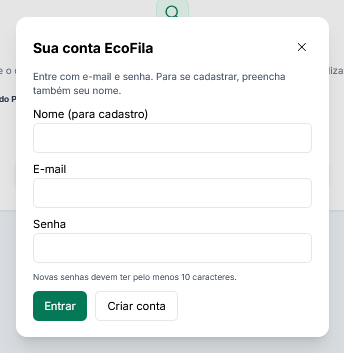
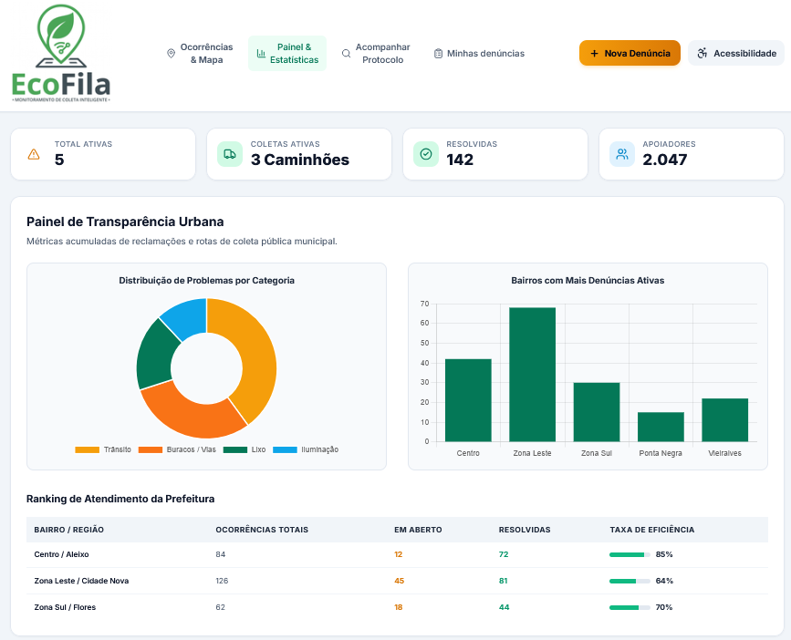
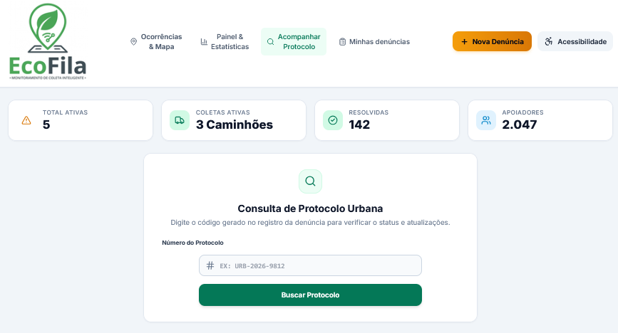

📋 Sobre o Projeto
O EcoFila é uma plataforma cidadã para registrar e acompanhar problemas urbanos. Ela reúne mapa de ocorrências, consulta de protocolos, estatísticas públicas e ferramentas de atendimento para operadores e administradores.
✨ Principais Funcionalidades
🎬 Demonstração
Screenshots




🛠️ Tecnologias Utilizadas
Frontend
- HTML5, CSS3 e JavaScript (ES6+)
- Tailwind CSS
- Leaflet para mapas
- Chart.js para gráficos
- Lucide para ícones
Backend
- Node.js 18 ou superior
- API HTTP do Node.js
- MySQL ou MariaDB
mysql2edotenv- Senhas protegidas com scrypt e salt
Ferramentas
- Git e GitHub
- npm
- Visual Studio Code (opcional)
📖 Como Usar
Exemplo Básico
O EcoFila é uma aplicação web com servidor e banco de dados. Depois de configurar o banco, instale as dependências e inicie o serviço:
npm install
npm startAbra http://localhost:3000 no navegador.
Configuração Avançada
Copie .env.example para .env, informe os dados do banco e defina as variáveis da primeira conta administradora:
HOST=127.0.0.1
PORT=3000
DB_HOST=127.0.0.1
DB_PORT=3306
DB_NAME=ecofila_usuarios
DB_USER=
DB_PASSWORD=
ADMIN_EMAIL=
ADMIN_PASSWORD=
NODE_ENV=developmentUse uma senha forte de pelo menos 10 caracteres em ADMIN_PASSWORD. Não publique o arquivo .env; o .gitignore já o exclui.
Pré-requisitos
- Navegador web moderno.
- Node.js 18 ou superior e npm.
- MySQL ou MariaDB.
Execute models/schema.sql no banco para criar as tabelas do EcoFila.
🗂️ Estrutura de Pastas
EcoFila-com-usuarios/
├── public/
│ └── assets/ # Logo e imagens do projeto
├── home/
│ ├── index.html # Página principal
│ ├── script.js # Mapa, ocorrências e interação
│ ├── styles.css # Estilos da página principal
│ └── ecofila-config.js # Configuração visual
├── login/
│ ├── index.html # Acesso e cadastro
│ ├── script.js # Comunicação com autenticação
│ └── styles.css # Estilos da tela de acesso
├── routes/
│ └── accounts.js # Contas, sessões e permissões
├── models/
│ └── schema.sql # Estrutura do banco de dados
├── views/
│ └── 404.html # Página não encontrada
├── docs/
│ ├── index.html # Apresentação HTML do projeto
│ └── screenshots/ # Capturas de tela
├── index.js # Servidor web e API
├── .env.example # Modelo de configuração
├── .gitignore
├── package.json
└── README.md🧪 Testes
O package.json ainda não define comandos para testes automatizados. A aplicação pode ser conferida manualmente depois de configurar o banco e iniciar o servidor.
🤝 Contribuindo
Contribuições são bem-vindas:
- Faça um fork do projeto.
- Crie uma branch para sua alteração.
- Faça as mudanças e registre um commit descritivo.
- Envie a branch ao seu fork.
- Abra um Pull Request explicando a alteração.
📄 Licença
O projeto ainda não contém um arquivo LICENSE. A licença precisa ser definida pelos responsáveis pelo EcoFila antes de estabelecer permissões de reutilização e distribuição.
🙏 Agradecimentos
- Leaflet e OpenStreetMap pela tecnologia e pelos dados cartográficos usados no mapa.
- Chart.js para os gráficos.
- Lucide para os ícones.
- Tailwind CSS para a estilização da interface.